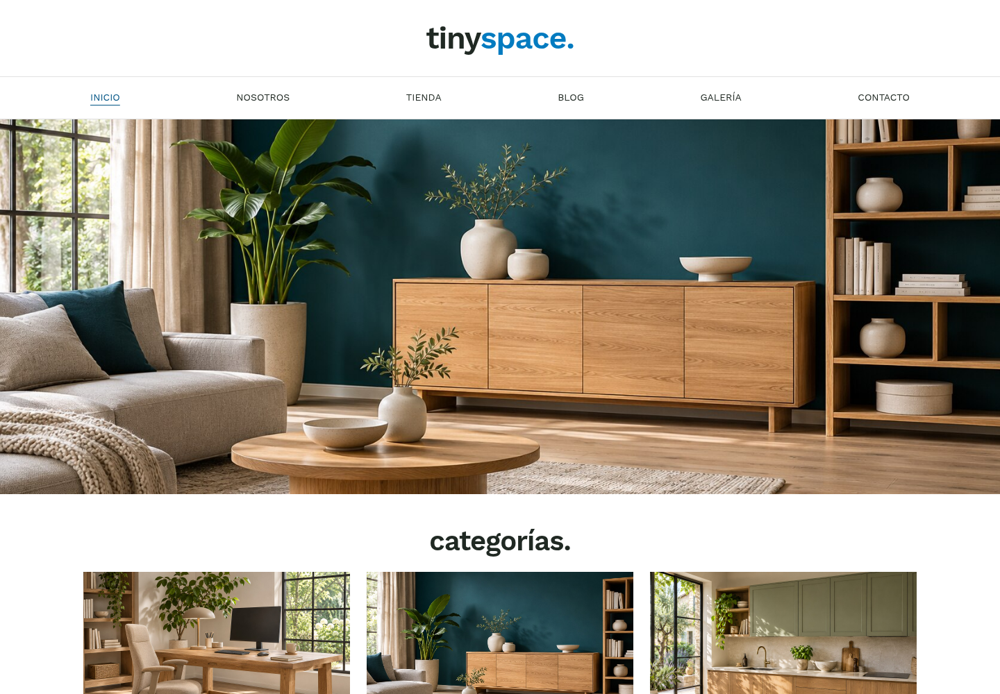
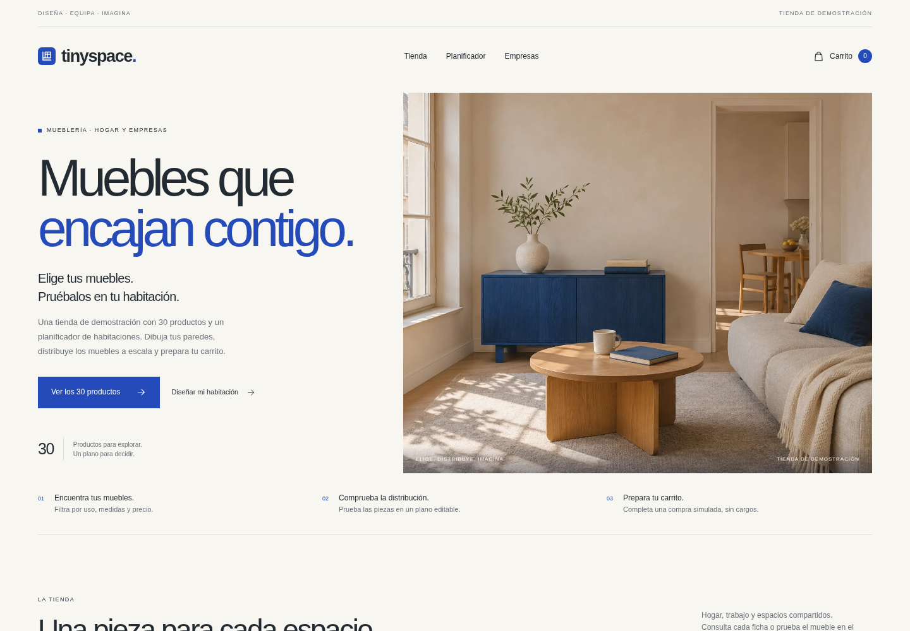
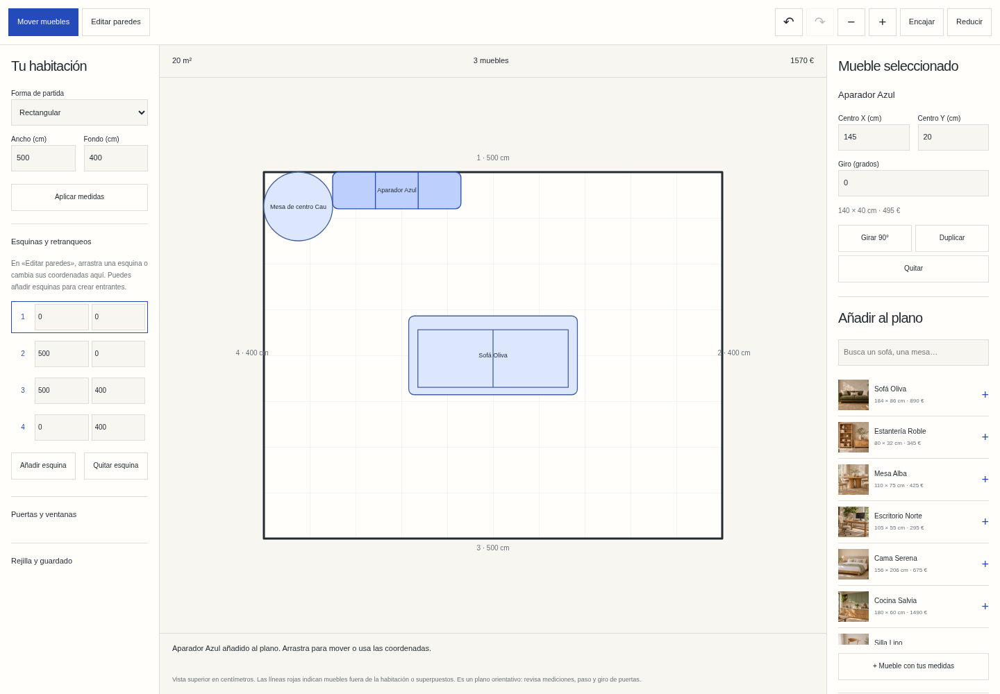

TINYSPACE / 2022 → 2026
El espacio importa.
La experiencia, también.
Tinyspace nació como un ejercicio de HTML y CSS. En esta nueva versión, la colección de mobiliario sirve para explorar una pregunta más concreta: ¿qué piezas encajan en tu casa y en tu forma de vivir?
El punto de partida.
En mayo de 2022 empecé Tinyspace como primer proyecto de un curso de HTML y CSS: una mueblería ficticia con catálogo, galería, blog y contacto.
Fue una forma de practicar composición, imágenes y diseño adaptable. El original sigue disponible y ha recibido mantenimiento; el año indica el comienzo del proyecto.
Visitar el original de 2022 ↗
Una idea más concreta.
La nueva Tinyspace permite elegir entre 30 productos y comprobar cómo se distribuyen en una habitación propia. La tienda se acompaña de un planificador a escala y una propuesta de servicios para empresas.
La nueva identidad combina una base cálida, azul profundo y fotografías de interiores. La composición deja espacio al contenido, las medidas y las decisiones de quien recorre la colección.


Lo que cambia al usarla.
- Encontrar una pieza. Treinta productos con búsqueda, filtros de uso, medidas y precio, y fichas detalladas.
- Dibujar la habitación. Medidas en centímetros, esquinas editables, entrantes, chaflanes, puertas y ventanas.
- Probar distribuciones. Muebles a escala que se pueden mover, girar y duplicar; piezas con medidas propias, avisos de solapes y zoom táctil.
- Conservar el plano. Deshacer, rehacer, guardado local y descarga de JSON editable o imagen SVG.
- Simular la compra. Carrito con cantidades y presupuesto, traslado desde el plano y confirmación de demostración sin cargos.
- Preparar un proyecto profesional. Servicios para oficinas, recepciones y alojamientos con briefing local descargable.
La colección es ficticia: precios, materiales y dimensiones son ilustrativos. Las compras y las solicitudes de proyecto son simuladas; no generan pagos ni pedidos. Las escenas se han generado con IA.
Una base cuidada.
La web adapta el tema al sistema, admite navegación por teclado y reduce las animaciones cuando el visitante lo solicita. El catálogo principal se puede consultar sin JavaScript; el editor y las simulaciones usan JavaScript local.
Las fotografías están optimizadas en WebP y la publicación incorpora títulos descriptivos, canónicas, sitemap y datos estructurados. El código del rediseño se mantiene en un repositorio privado.
Es una experiencia que puedo enseñar y probar: desde dibujar una habitación hasta preparar un carrito, con un alcance claro y sin pedir datos personales.
Dos etapas, dos versiones.
El original conserva su dirección e historia. La nueva Tinyspace se publica de forma independiente en tiny.nmclabs.dev.
Conocer el contexto del rediseño ↗